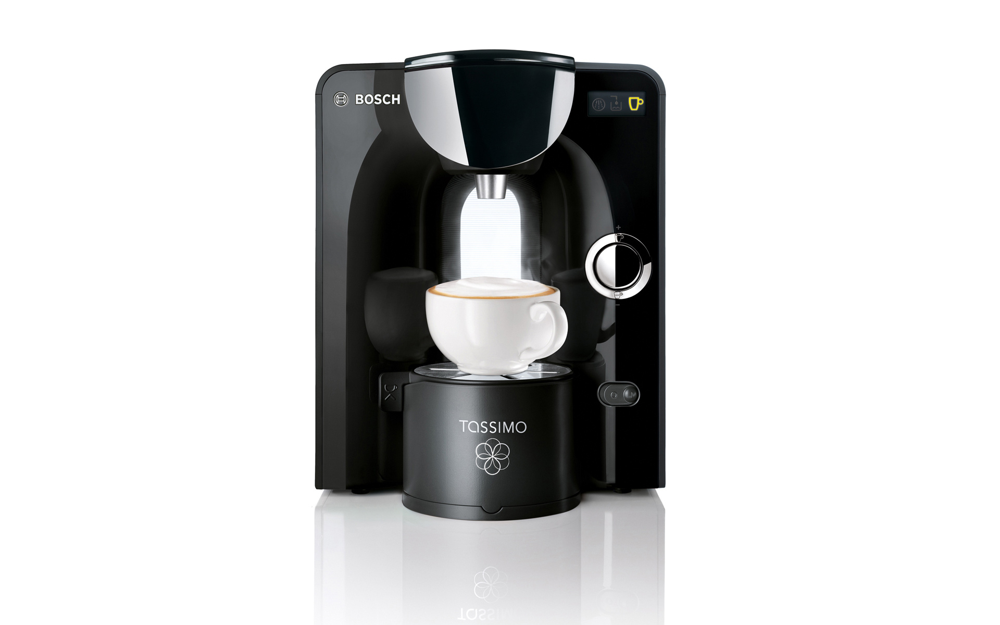
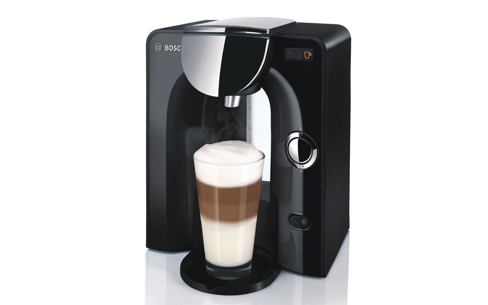
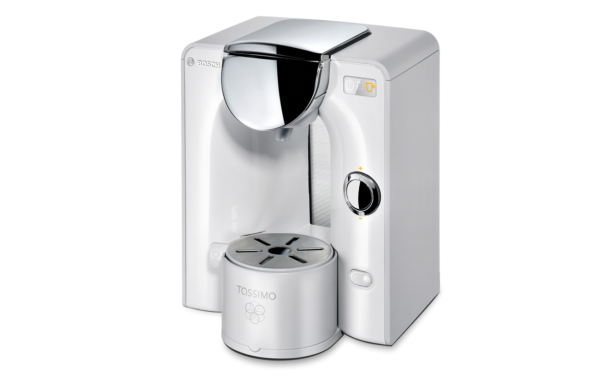
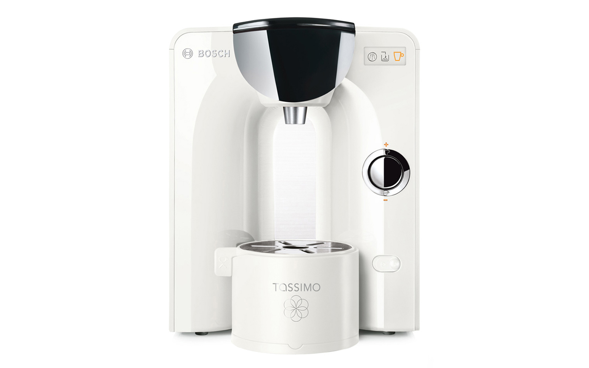

Bosch Tassimo TAS55
Hot Drink Machine
Bosch Tassimo TAS55
Heißgetränk-Vollautomat
The hot drink machine Bosch Tassimo TAS55 is characterized by its high-quality materials and its timeless shape.
Because of its 360° design, the compact body is suitable for placement in open kitchen and living areas.
Thanks to the transparent water tank, the user can look through the machine like through an archway. The
cup stand is height adjustable, so that even 15 cm high latte macchiato glasses fit easily under it.
Selić Industriedesign service: CAD design support, CAD freeform modeling and design refinement,
processing of design data for the engineering department
Charakteristisch für den Heißgetränk-Vollautomaten Bosch Tassimo TAS55 sind die hochwertige Materialität und die zeitlose Form.
Der kompakte Kubus eignet sich aufgrund der Rundumgestaltung perfekt für die Positionierung in offenen
Küchen und Wohnräumen. Dank des transparenten Wassertanks kann der Betrachter wie bei einem Torbogen durch
die Maschine hindurch sehen. Das Tassenpodest ist höhenverstellbar, so dass auch 15cm hohe Latte Macchiato
Gläser problemlos darunter passen.
Selić Industriedesign Dienstleistung: CAD-Design Unterstützung, CAD-Freiform-Modellierung und
Detailgestaltung, Aufbereitung von Designdaten für die Konstruktion




Images © BSH GmbH